Pseudo-data generation with AMIGO_SData
Contents
- Description of AMIGO_SData with pseudo-data options
- Example
- 1: Homoscedastic error for each observable
- 2: Known heteroscedastic error
- 3: Additive error scaling with the signal
- 4: Additive error scaling with the signal with detection limit
- 5: Multiplicative error
- 6: Multiplicative error with detection limit
- See also
- References
Description of AMIGO_SData with pseudo-data options
- AMIGO_SData can be used to generate pseudo- experimental data for the purpose of numerical tests.
- The following error models are admited:
- Homocesdastic Gaussian additive error with constant standard deviation throughout time
- Heteroscedastic Gaussian additive error (different standard deviation value for each data)
- Heteroscedastic Gaussian additive error scaling with the signal
- Gaussian additive error scaling with the signal with detection limit
- Multiplicative error
- Multiplicative error with detection limit
- Remark that inputs.model.par and inputs.exps.exp_y0{iexp} are used
(by default) for simulation. Alternatively, inputs.PEsol.global_theta_guess, .global_theta_y0_guess, .local_theta_guess{iexp} and
.local_theta_y0_guess{iexp}, will be used, if supplied by the user.
Example
% TITLE: Linear reaction A->B->C % % A is transformed into B, and B into C % following 1st order reactions. clear; %============================ % RESULTS PATHS RELATED DATA %============================ inputs.pathd.results_folder='ABCreaction'; % Folder to keep results (in Results\) inputs.pathd.short_name='ABCreac'; % Label to identify figures and reports inputs.pathd.run_overwrite='on'; %============================ % MODEL DEFINITION %============================ inputs.model.input_model_type='charmodelC'; % Model type- C inputs.model.n_st=3; % Number of states inputs.model.n_par=2; % Number of parameters inputs.model.n_stimulus=0; % Number of stimuli inputs.model.st_names=char('cA','cB','cC'); % Names of the states inputs.model.par_names=char('k1','k2'); % Names of the parameters inputs.model.eqns=... % Model equations char('dcA = -k1*cA',... 'dcB = k1*cA - k2*cB',... 'dcC = k2*cB'); % Note that SData use the inputs.model.par for simulation and to generate data k1=0.15; k2=1; inputs.model.par=[k1 k2]; % Nominal parameter values %============================ % EXPERIMENTS RELATED INFO %============================ inputs.exps.n_exp = 1; % Number of experiments inputs.exps.exp_y0{1} = [10 0 0]; % Initial conditions inputs.exps.n_obs{1}=3; % Number of observables inputs.exps.obs{1}= 'states'; % All states are measured inputs.exps.t_f{1}=10; % Experiment duration inputs.exps.n_s{1}=11; % Number of sampling times inputs.exps.t_s{1}=0:10; % Sampling times %================================== % NUMERICAL METHDOS RELATED DATA %================================== % SIMULATION % Default for charmodel C: CVODES
More information regarding the inputs used in this example can be found here.
AMIGO_htmldoc_inputs(inputs,fullfile(pwd,'html','sdataex2.html')); %==================================================== % CALL AMIGO2 from COMMAND LINE - LEAST SQUARES CASE %==================================================== % It is recommended to keep all inputs in a 'problem_file'.m. % AMIGO2 PE task can be called as follows: % AMIGO_PE('problem_file','run_ident') or AMIGO_ContourP(inputs) AMIGO_Prep(inputs);
***********************************
AMIGO2, Copyright @CSIC
AMIGO2_R2016a [Oct 2015]
***********************************
*Date: 21-Dec-2015
------>Pre processing....this may take a few seconds.
------>Checking inputs....
------> WARNING message
AMIGO_check_model: You did not specify inputs.model.exe_type, standard will be assumed
Warning: AMIGO_check_IVPsolver: Changing ivp solver to the only option
compatible with charmodelC, cvodes
Warning: AMIGO_check_IVPsolver: Changing sensitivities solver to, cvodes
------> Generating C code ...
------> Mexing files....
Building with 'MinGW64 Compiler (C)'.
D:\AMIGO2_REPO_2014\AMIGO2R2016\Kernel\IVP_solvers\cvodes\C_src4Amigo\src\src_amigo\simulate_amigo_model.c: In function 'simulate_amigo_model':
D:\AMIGO2_REPO_2014\AMIGO2R2016\Kernel\IVP_solvers\cvodes\C_src4Amigo\src\src_amigo\simulate_amigo_model.c:330:16: warning: passing argument 1 of 'mexPrintf' from incompatible pointer type
mexPrintf(stderr,"\nSolver failed at flag = CVode(cvode_mem, tout, y, &t, CV_TSTOP_RETURN);. . .\n");
^
In file included from D:\AMIGO2_REPO_2014\AMIGO2R2016\Kernel\IVP_solvers\cvodes\C_src4Amigo\include\include_amigo/simulate_amigo_model.h:4:0,
from D:\AMIGO2_REPO_2014\AMIGO2R2016\Kernel\IVP_solvers\cvodes\C_src4Amigo\src\src_amigo\simulate_amigo_model.c:1:
C:\MATLAB_R2015b_64/extern/include/mex.h:202:27: note: expected 'const char *' but argument is of type 'struct FILE *'
LIBMWMEX_API_EXTERN_C int mexPrintf(
^
D:\AMIGO2_REPO_2014\AMIGO2R2016\Kernel\IVP_solvers\cvodes\C_src4Amigo\src\src_interface\interface_with_matlab.c: In function 'mexFunction':
D:\AMIGO2_REPO_2014\AMIGO2R2016\Kernel\IVP_solvers\cvodes\C_src4Amigo\src\src_interface\interface_with_matlab.c:200:17: warning: assignment from incompatible pointer type
stats_struct = mxGetPr(plhs[5]);
^
MEX completed successfully.
------>Files generated....
1: Homoscedastic error for each observable
Additive Gaussian measurement error model with constant standard deviation 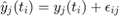, where:
- 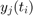 is the simulated value at time 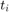 of observable 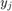
- 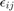 is a random variable: 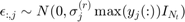
- 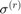 is the relative standard deviation given by the user through inputs.exps.std_dev for each observable separately.
Useful if we approximately know the relative error (in %100) in the measurements. Note that the maximum value of each observable is used to scale the relative standard deviation.
inputs.exps.data_type = 'pseudo'; inputs.exps.noise_type = 'homo_var'; inputs.exps.std_dev{1} = [0.1 0.03 0.07]; results = AMIGO_SData(inputs);
***********************************
AMIGO2, Copyright @CSIC
AMIGO2_R2016a [Oct 2015]
***********************************
*Date: 21-Dec-2015
------>Checking inputs....
------> WARNING message
AMIGO_check_model: You did not specify inputs.model.exe_type, standard will be assumed
Warning: AMIGO_check_IVPsolver: Changing ivp solver to the only option
compatible with charmodelC, cvodes
Warning: AMIGO_check_IVPsolver: Changing sensitivities solver to, cvodes
------> Calculating simulated experimental data for synthetic problems.
Experimental noise being used:
Homocedastic noise with varying variance.
Maximum standard deviation:
*Experiment 1:
Observable 1, 10.000000 (percent)
Observable 2, 3.000000 (percent)
Observable 3, 7.000000 (percent)
-----------------------------------------------
Initial value problem related active settings
-----------------------------------------------
ivpsolver: cvodes
RelTol: 1e-05
AbsTol: 1e-07
MaxStepSize: Inf
MaxNumberOfSteps: 100000
--------------------------------------------------------------------------
>>>> Generated experimental data for each experiment:
Experimental data 1:
inputs.exps.exp_data{1}=[
10.3333 0.0331777 -0.254469
7.51449 0.858696 0.696387
7.02123 1.05862 1.86984
6.25385 1.07884 2.36869
4.82834 0.944495 4.3207
4.09919 0.808777 4.26653
3.83938 0.686582 5.68487
2.94854 0.599344 6.38452
1.66968 0.543743 6.48628
3.32899 0.484423 6.90654
1.31175 0.395219 7.82511
];
Error data 1:
Standard deviation: 10%
Standard deviation: 3%
Standard deviation: 7%
inputs.exps.error_data{1}=[
1 0.0320545 0.516246
1 0.0320545 0.516246
1 0.0320545 0.516246
1 0.0320545 0.516246
1 0.0320545 0.516246
1 0.0320545 0.516246
1 0.0320545 0.516246
1 0.0320545 0.516246
1 0.0320545 0.516246
1 0.0320545 0.516246
1 0.0320545 0.516246
];
--------------------------------------------------------------------------
------>Plotting results....
<strong>
------>Results (report and struct_results.mat) and plots were kept in the directory:
</strong><strong>D:\AMIGO2_REPO_2014\AMIGO2R2016\Results\ABCreaction\SData_ABCreac_run1</strong>
Click <a href="matlab: cd('D:\AMIGO2_REPO_2014\AMIGO2R2016\Results\ABCreaction\SData_ABCreac_run1')">here</a> to go to the results folder or <a href="matlab: load('D:\AMIGO2_REPO_2014\AMIGO2R2016\Results\ABCreaction\SData_ABCreac_run1\strreport_ABCreac_run1.mat')">here</a> to load the results.
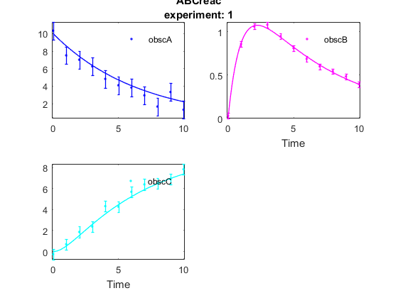
- REMARKS on Homocesdastic Gaussian additive error with constant standard deviation throughout time
- Maximum measurement value for each observable is being used to compute relative error. This may induce large errors for lower signal values.
- It is possible to forze positive pseudo-data by means of 'pseudo_pos' option.
- Error bars have the same magnitude throughout time
- Different observables result in different error magnitudes, thus taking into account the effect of different measurement scales.
- Experimental data may not be included in the error bar. Bars represent 1 standard deviation, which contains the true value with 0.68 probability.
2: Known heteroscedastic error
Additive Gaussian measurement error model with unique standard deviation for each point: , where:
- is the simulated value at time of observable
- is a random variable: 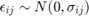
- 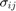 is the absolut standard deviation given by the user through inputs.exps.error_data for each measurement point.
Useful if we know the measurement accuracy in each timepoint.
inputs.exps.data_type = 'pseudo'; inputs.exps.noise_type = 'hetero'; inputs.exps.error_data{1} = ... [1.0 0.01 0.01 0.9000 0.0500 0.0500 0.8056 0.2000 0.1000 0.7111 0.3500 0.1500 0.6167 0.5000 0.2000 0.5222 0.5000 0.2500 0.4278 0.5000 0.3000 0.3333 0.3875 0.3500 0.2389 0.2750 0.4000 0.1444 0.1625 0.4500 0.0500 0.0500 0.5000]; results = AMIGO_SData(inputs);
***********************************
AMIGO2, Copyright @CSIC
AMIGO2_R2016a [Oct 2015]
***********************************
*Date: 21-Dec-2015
------>Checking inputs....
------> WARNING message
AMIGO_check_model: You did not specify inputs.model.exe_type, standard will be assumed
Warning: AMIGO_check_IVPsolver: Changing ivp solver to the only option
compatible with charmodelC, cvodes
Warning: AMIGO_check_IVPsolver: Changing sensitivities solver to, cvodes
------> Calculating simulated experimental data for synthetic problems.
Experimental noise being used:
Heterocedastic noise.
Standard deviation is given for each point:
*Experiment 1:
Time Observables (abs STD)
t(1) 1 0.01 0.01
t(2) 0.9 0.05 0.05
t(3) 0.81 0.2 0.1
t(4) 0.71 0.35 0.15
t(5) 0.62 0.5 0.2
t(6) 0.52 0.5 0.25
t(7) 0.43 0.5 0.3
t(8) 0.33 0.39 0.35
t(9) 0.24 0.28 0.4
t(10) 0.14 0.16 0.45
t(11) 0.05 0.05 0.5
-----------------------------------------------
Initial value problem related active settings
-----------------------------------------------
ivpsolver: cvodes
RelTol: 1e-05
AbsTol: 1e-07
MaxStepSize: Inf
MaxNumberOfSteps: 100000
--------------------------------------------------------------------------
>>>> Generated experimental data for each experiment:
Experimental data 1:
inputs.exps.exp_data{1}=[
8.19634 -0.00640975 -0.00103628
8.63745 0.804139 0.430569
7.46388 1.03935 1.55988
6.63625 1.07434 2.44801
4.94242 1.2773 3.84577
3.98727 0.882192 4.46763
2.937 0.331279 5.2899
3.68106 0.0257513 5.60903
3.26948 0.369584 6.66625
2.52824 0.23566 6.97945
2.35027 0.42986 7.48302
];
Error data 1:
Standard deviation: 10%
Standard deviation: 3%
Standard deviation: 7%
inputs.exps.error_data{1}=[
1 0.01 0.01
0.9 0.05 0.05
0.8056 0.2 0.1
0.7111 0.35 0.15
0.6167 0.5 0.2
0.5222 0.5 0.25
0.4278 0.5 0.3
0.3333 0.3875 0.35
0.2389 0.275 0.4
0.1444 0.1625 0.45
0.05 0.05 0.5
];
--------------------------------------------------------------------------
------>Plotting results....
<strong>
------>Results (report and struct_results.mat) and plots were kept in the directory:
</strong><strong>D:\AMIGO2_REPO_2014\AMIGO2R2016\Results\ABCreaction\SData_ABCreac_run1</strong>
Click <a href="matlab: cd('D:\AMIGO2_REPO_2014\AMIGO2R2016\Results\ABCreaction\SData_ABCreac_run1')">here</a> to go to the results folder or <a href="matlab: load('D:\AMIGO2_REPO_2014\AMIGO2R2016\Results\ABCreaction\SData_ABCreac_run1\strreport_ABCreac_run1.mat')">here</a> to load the results.
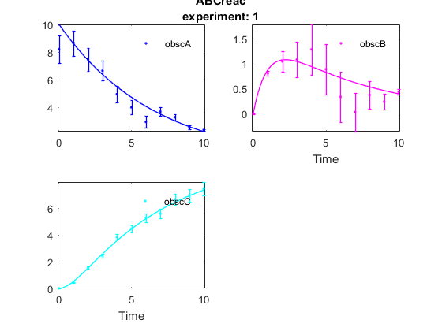
- REMARKS on Known heteroscedastic error
- Error bars represent the values introduced by users.
- Different accuracies can be defined for each timepoint in each observable.
- Experimental data may not be included in the error bar. Bars represent 1 standard deviation, which contains the true value with 0.68 probability.
3: Additive error scaling with the signal
additive Gaussian measurement error model, the standard deviation of which scales with the signal (constant signal to noise ratio). 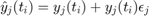, where:
- is the simulated value at time of observable
- 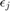 is a random variable: 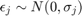
- 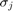 vector is given by the user through inputs.exps.std_dev for each observable.
Useful if we know that (1) the measurement error is proportional to the signal and (2) the proportionality factor.
inputs.exps.data_type = 'pseudo'; inputs.exps.noise_type = 'hetero_proportional'; inputs.exps.std_dev{1} = [0.1 0.03 0.07]; results = AMIGO_SData(inputs);
***********************************
AMIGO2, Copyright @CSIC
AMIGO2_R2016a [Oct 2015]
***********************************
*Date: 21-Dec-2015
------>Checking inputs....
------> WARNING message
AMIGO_check_model: You did not specify inputs.model.exe_type, standard will be assumed
Warning: AMIGO_check_IVPsolver: Changing ivp solver to the only option
compatible with charmodelC, cvodes
Warning: AMIGO_check_IVPsolver: Changing sensitivities solver to, cvodes
------> Calculating simulated experimental data for synthetic problems.
Experimental noise being used:
Heterocedastic noise.
Standard deviation proportional to the observable: a*y being a maximum:
*Experiment 1:
Observable 1, 10.000000 (percent)
Observable 2, 3.000000 (percent)
Observable 3, 7.000000 (percent)
-----------------------------------------------
Initial value problem related active settings
-----------------------------------------------
ivpsolver: cvodes
RelTol: 1e-05
AbsTol: 1e-07
MaxStepSize: Inf
MaxNumberOfSteps: 100000
--------------------------------------------------------------------------
>>>> Generated experimental data for each experiment:
Experimental data 1:
inputs.exps.exp_data{1}=[
9.67973 0 0
9.16084 0.905603 0.602703
5.60117 1.06715 1.54355
6.48192 1.03547 2.5039
6.06338 0.944925 3.45625
4.6336 0.857375 4.37472
4.30075 0.661958 5.51303
3.29099 0.584944 5.81432
3.06397 0.551101 7.3779
2.44101 0.483244 6.78499
2.48679 0.391262 7.00538
];
Error data 1:
Standard deviation: 10%
Standard deviation: 3%
Standard deviation: 7%
inputs.exps.error_data{1}=[
1 0 0
0.860708 0.0260911 0.0366253
0.740818 0.0320545 0.106633
0.637628 0.0311194 0.181046
0.548812 0.0280838 0.250298
0.472367 0.0246502 0.311821
0.40657 0.0213927 0.365479
0.349938 0.0184777 0.411923
0.301194 0.0159277 0.451993
0.25924 0.013718 0.486517
0.22313 0.0118104 0.516246
];
--------------------------------------------------------------------------
------>Plotting results....
<strong>
------>Results (report and struct_results.mat) and plots were kept in the directory:
</strong><strong>D:\AMIGO2_REPO_2014\AMIGO2R2016\Results\ABCreaction\SData_ABCreac_run1</strong>
Click <a href="matlab: cd('D:\AMIGO2_REPO_2014\AMIGO2R2016\Results\ABCreaction\SData_ABCreac_run1')">here</a> to go to the results folder or <a href="matlab: load('D:\AMIGO2_REPO_2014\AMIGO2R2016\Results\ABCreaction\SData_ABCreac_run1\strreport_ABCreac_run1.mat')">here</a> to load the results.
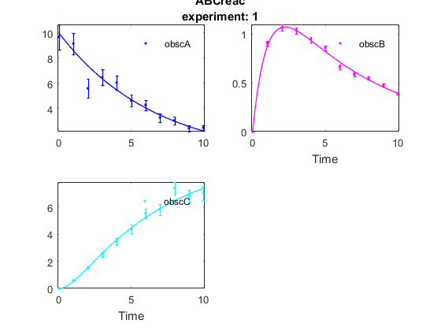
- REMARKS on Additive error scaling with the signal
- Error bars scale with the signal value.
- Error bars are different for the different observables and sampling times, thus the effect of different measurement units and different accuracy for different observables can be handled.
- Experimental data may not be included in the error bar. Bars represent 1 standard deviation, which contains the true value with 0.68 probability.
4: Additive error scaling with the signal with detection limit
additive Gaussian measurement error model, the standard deviation of which scales with the signal (constant signal to noise ratio). The model is extended to low signals, where the error levels off.
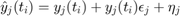 ,
where:
- is the simulated value at time of observable
- is a random variable: 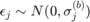
- 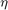 is the background noise variable 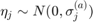
- 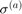 and 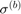 vectors are given by the user through inputs.exps.std_deva and inputs.exps.std_devb for each observable.
The variance of the pseudo data is: 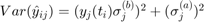
Useful if we know that (1) the measurement error is proportional to the signal for large signals and constant for small signals. Equivalently, the signal to noise ratio is constant for large signals, but decreases as the signal reach a low limit.
inputs.exps.data_type = 'pseudo'; inputs.exps.noise_type = 'hetero_lin'; inputs.exps.std_deva{1} = [0.2 0.2 0.5]; inputs.exps.std_devb{1} = [0.05 0.03 0.07]; % extend the time horizon to see small values for obsA inputs.exps.t_f{1}=20; inputs.exps.t_in{1} = 0; inputs.exps.n_s{1}=21; inputs.exps.t_s{1}=0:20; results = AMIGO_SData(inputs);
***********************************
AMIGO2, Copyright @CSIC
AMIGO2_R2016a [Oct 2015]
***********************************
*Date: 21-Dec-2015
------>Checking inputs....
------> WARNING message
AMIGO_check_model: You did not specify inputs.model.exe_type, standard will be assumed
Warning: AMIGO_check_IVPsolver: Changing ivp solver to the only option
compatible with charmodelC, cvodes
Warning: AMIGO_check_IVPsolver: Changing sensitivities solver to, cvodes
------> Calculating simulated experimental data for synthetic problems.
Experimental noise being used:
Heterocedastic noise a+b*y.
*Experiment 1:
Observable 1, 0.200000 ,0.050000
Observable 2, 0.200000 ,0.030000
Observable 3, 0.500000 ,0.070000
-----------------------------------------------
Initial value problem related active settings
-----------------------------------------------
ivpsolver: cvodes
RelTol: 1e-05
AbsTol: 1e-07
MaxStepSize: Inf
MaxNumberOfSteps: 100000
--------------------------------------------------------------------------
>>>> Generated experimental data for each experiment:
Experimental data 1:
inputs.exps.exp_data{1}=[
10.3325 -0.242142 -0.320615
8.32026 0.436018 1.23272
7.46908 0.827104 1.36852
6.07527 1.30976 1.82855
5.07773 0.862412 2.87376
4.15615 1.33476 4.50748
3.95043 0.787986 5.60677
3.51209 0.785304 6.80567
3.18171 0.495621 6.25322
2.84503 0.414918 6.94486
2.2715 0.216389 7.11405
2.14225 0.375021 6.58754
1.66976 -0.0167234 8.75244
1.42866 0.0827026 8.70806
1.48832 -0.000670103 9.0312
1.3842 0.218107 8.78438
0.879536 0.455563 6.98237
0.359489 0.565525 8.72743
0.230765 -0.233235 9.25459
0.217838 0.171642 9.20077
0.247775 -0.0434701 9.42599
];
Error data 1:
Standard deviation: 10%
Standard deviation: 3%
Standard deviation: 7%
inputs.exps.error_data{1}=[
0.538516 0.2 0.5
0.474557 0.201695 0.50134
0.420955 0.202552 0.511244
0.376354 0.202407 0.531768
0.339556 0.201962 0.559151
0.309488 0.201513 0.589264
0.285175 0.201141 0.619334
0.265733 0.200852 0.647828
0.250359 0.200633 0.674016
0.23833 0.20047 0.697638
0.229013 0.200348 0.718686
0.221857 0.200258 0.737284
0.216404 0.200191 0.753622
0.212274 0.200142 0.767913
0.209162 0.200105 0.780372
0.206826 0.200078 0.791208
0.205079 0.200058 0.800615
0.203775 0.200043 0.808769
0.202803 0.200032 0.815828
0.20208 0.200023 0.821933
0.201543 0.200017 0.827209
];
--------------------------------------------------------------------------
------>Plotting results....
<strong>
------>Results (report and struct_results.mat) and plots were kept in the directory:
</strong><strong>D:\AMIGO2_REPO_2014\AMIGO2R2016\Results\ABCreaction\SData_ABCreac_run1</strong>
Click <a href="matlab: cd('D:\AMIGO2_REPO_2014\AMIGO2R2016\Results\ABCreaction\SData_ABCreac_run1')">here</a> to go to the results folder or <a href="matlab: load('D:\AMIGO2_REPO_2014\AMIGO2R2016\Results\ABCreaction\SData_ABCreac_run1\strreport_ABCreac_run1.mat')">here</a> to load the results.
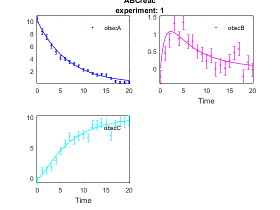
- REMARKS on Additive error scaling with the signal with detection limit
- Error bars scale with the signal value but they are constant for low signal values.
- Error bars are different for the different observables and sampling times, thus the effect of different measurement units and different accuracy for different observables can be handled.
- Experimental data may not be included in the error bar. Bars represent 1 standard deviation, which contains the true value with 0.68 probability.
5: Multiplicative error
multiplicative log-normal measurement error model, the standard deviation of which scales with the signal (constant signal to noise ratio).
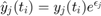 ,
where:
- is the simulated value at time of observable
- is a random variable:
- vectors are given by the user through inputs.exps.std_deva and inputs.exps.std_devb for each observable.
The variance of the pseudo data is: 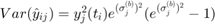
Useful if we know that (1) the multiplicative measurement error is dominated in the measurement, which is proportional to the signal for large signals.
inputs.exps.data_type = 'pseudo'; inputs.exps.noise_type = 'log_normal'; inputs.exps.std_devb{1} = [0.05 0.03 0.07]; % extend the time horizon to see small values for obsA inputs.exps.t_f{1}=20; inputs.exps.t_in{1} = 0; inputs.exps.n_s{1}=21; inputs.exps.t_s{1}=0:20; % change the initial condition to see large changes inputs.exps.exp_y0{1} = [1e3 0 0]; inputs.model.par=[k1*0.8 k2]; results = AMIGO_SData(inputs);
***********************************
AMIGO2, Copyright @CSIC
AMIGO2_R2016a [Oct 2015]
***********************************
*Date: 21-Dec-2015
------>Checking inputs....
------> WARNING message
AMIGO_check_model: You did not specify inputs.model.exe_type, standard will be assumed
Warning: AMIGO_check_IVPsolver: Changing ivp solver to the only option
compatible with charmodelC, cvodes
Warning: AMIGO_check_IVPsolver: Changing sensitivities solver to, cvodes
------> Calculating simulated experimental data for synthetic problems.
Experimental noise being used:
-----------------------------------------------
Initial value problem related active settings
-----------------------------------------------
ivpsolver: cvodes
RelTol: 1e-05
AbsTol: 1e-07
MaxStepSize: Inf
MaxNumberOfSteps: 100000
--------------------------------------------------------------------------
>>>> Generated experimental data for each experiment:
Experimental data 1:
inputs.exps.exp_data{1}=[
996.694 0 0
862.97 73.5424 38.7249
789.309 87.1255 112.398
715.802 92.4289 218.147
655.18 79.5948 292.463
524.821 74.007 398.676
473.034 66.6448 445.437
416.432 60.6543 502.116
399.475 51.6629 500.801
367.376 45.0099 581.661
317.52 42.8484 662.562
285.661 36.823 675.874
239.899 30.5043 798.985
201.88 28.9307 669.616
192.817 24.1504 778.274
180.202 23.0819 818.697
150.364 20.8413 792.305
136.213 17.6344 858.945
106.76 15.3036 976.103
105.247 14.4712 821.114
90.0234 12.1829 875.145
];
Error data 1:
Standard deviation: 10%
Standard deviation: 3%
Standard deviation: 7%
inputs.exps.error_data{1}=[
50.0938 0 0
44.4293 2.12479 2.97196
39.4052 2.66619 8.75126
34.9493 2.65217 15.0335
30.9972 2.45805 21.0305
27.4921 2.21899 26.506
24.3833 1.98235 31.4198
21.626 1.7635 35.7991
19.1806 1.56604 39.6911
17.0116 1.38968 43.1458
15.088 1.2328 46.2111
13.3818 1.09347 48.9301
11.8686 0.969859 51.3417
10.5265 0.860212 53.4807
9.3362 0.762948 55.3778
8.28047 0.676675 57.0604
7.34412 0.60016 58.5527
6.51365 0.532299 59.8762
5.7771 0.472111 61.0501
5.12384 0.418728 62.0913
4.54446 0.37138 63.0146
];
--------------------------------------------------------------------------
------>Plotting results....
<strong>
------>Results (report and struct_results.mat) and plots were kept in the directory:
</strong><strong>D:\AMIGO2_REPO_2014\AMIGO2R2016\Results\ABCreaction\SData_ABCreac_run1</strong>
Click <a href="matlab: cd('D:\AMIGO2_REPO_2014\AMIGO2R2016\Results\ABCreaction\SData_ABCreac_run1')">here</a> to go to the results folder or <a href="matlab: load('D:\AMIGO2_REPO_2014\AMIGO2R2016\Results\ABCreaction\SData_ABCreac_run1\strreport_ABCreac_run1.mat')">here</a> to load the results.
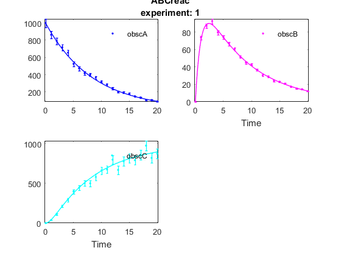
- REMARKS on Multiplicative error
- Error bars scale with the signal value.
- Error bars are different for the different observables and sampling times, thus the effect of different measurement units and different accuracy for different observables can be handled.
- Experimental data may not be included in the error bar. Bars represent 1 standard deviation, which contains the true value with 0.68 probability.
6: Multiplicative error with detection limit
multiplicative log-normal measurement error model, the standard deviation of which scales with the signal (constant signal to noise ratio). The model is extended to low signals, where the error levels off.
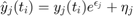 ,
where:
- is the simulated value at time of observable
- is a random variable:
- is the background noise variable
- and vectors are given by the user through inputs.exps.std_deva and inputs.exps.std_devb for each observable.
The variance of the pseudo data is: 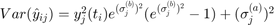
Useful if we know that (1) the multiplicative measurement error is dominated in the measurement, which is proportional to the signal for large signals and constant for small signals. Equivalently, the signal to noise ratio is constant for large signals, but decreases as the signal reach a low limit.
inputs.exps.data_type = 'pseudo'; inputs.exps.noise_type = 'log_normal_background'; inputs.exps.std_deva{1} = [10 5 5]; inputs.exps.std_devb{1} = [0.05 0.03 0.07]; % extend the time horizon to see small values for obsA inputs.exps.t_f{1}=20; inputs.exps.t_in{1} = 0; inputs.exps.n_s{1}=21; inputs.exps.t_s{1}=0:20; % change the initial condition to see large changes inputs.exps.exp_y0{1} = [1e3 0 0]; inputs.model.par=[k1*0.8 k2]; results = AMIGO_SData(inputs);
***********************************
AMIGO2, Copyright @CSIC
AMIGO2_R2016a [Oct 2015]
***********************************
*Date: 21-Dec-2015
------>Checking inputs....
------> WARNING message
AMIGO_check_model: You did not specify inputs.model.exe_type, standard will be assumed
Warning: AMIGO_check_IVPsolver: Changing ivp solver to the only option
compatible with charmodelC, cvodes
Warning: AMIGO_check_IVPsolver: Changing sensitivities solver to, cvodes
------> Calculating simulated experimental data for synthetic problems.
Experimental noise being used:
-----------------------------------------------
Initial value problem related active settings
-----------------------------------------------
ivpsolver: cvodes
RelTol: 1e-05
AbsTol: 1e-07
MaxStepSize: Inf
MaxNumberOfSteps: 100000
--------------------------------------------------------------------------
>>>> Generated experimental data for each experiment:
Experimental data 1:
inputs.exps.exp_data{1}=[
904.486 0.598342 -7.61224
914.87 75.0685 50.9097
756.271 96.8418 127.922
673.357 91.8334 199.235
672.328 80.829 279.465
570.949 71.1119 333.509
464.895 65.6208 474.137
461.18 54.6822 480.2
393.651 63.2131 568.623
338.717 39.6763 623.191
344.496 42.0075 663.267
293.658 34.6845 665.054
227.435 33.1717 728.019
216.329 36.5899 741.111
187.293 29.4313 869.467
179.82 18.5773 759.129
128.076 12.4787 819.405
104.467 21.4728 921.463
109.303 11.3629 896.536
94.5899 10.4853 817.202
102.765 14.8034 948.094
];
Error data 1:
Standard deviation: 10%
Standard deviation: 3%
Standard deviation: 7%
inputs.exps.error_data{1}=[
51.0822 5 5
45.5407 5.43275 5.81657
40.6543 5.66644 10.0789
36.3518 5.65986 15.8432
32.5704 5.57153 21.6168
29.2543 5.47028 26.9735
26.3542 5.37864 31.8152
23.8262 5.30188 36.1466
21.6309 5.23951 40.0048
19.7331 5.18953 43.4346
18.101 5.14974 46.4808
16.7055 5.11817 49.1849
15.5198 5.09319 51.5846
14.5192 5.07346 53.7139
13.6808 5.05787 55.603
12.9833 5.04558 57.279
12.4071 5.03589 58.7658
11.9343 5.02825 60.0846
11.5488 5.02224 61.2545
11.2363 5.0175 62.2922
10.9842 5.01377 63.2127
];
--------------------------------------------------------------------------
------>Plotting results....
<strong>
------>Results (report and struct_results.mat) and plots were kept in the directory:
</strong><strong>D:\AMIGO2_REPO_2014\AMIGO2R2016\Results\ABCreaction\SData_ABCreac_run1</strong>
Click <a href="matlab: cd('D:\AMIGO2_REPO_2014\AMIGO2R2016\Results\ABCreaction\SData_ABCreac_run1')">here</a> to go to the results folder or <a href="matlab: load('D:\AMIGO2_REPO_2014\AMIGO2R2016\Results\ABCreaction\SData_ABCreac_run1\strreport_ABCreac_run1.mat')">here</a> to load the results.
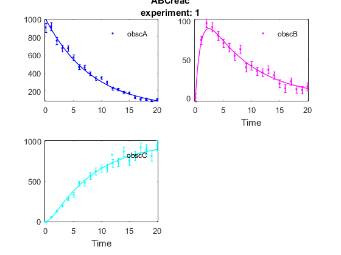
- REMARKS on Multiplicative error with detection limit
- Error bars scale with the signal value but they are constant for low signal values.
- Error bars are different for the different observables and sampling times, thus the effect of different measurement units and different accuracy for different observables can be handled.
- Experimental data may not be included in the error bar. Bars represent 1 standard deviation, which contains the true value with 0.68 probability.
See also
References
Model was taken from:
Locke J.C.W; A.J. Millar; M.S. Turner. Modelling genetic networks with noisy and varied experimental data: the circadian clock in Arabidopsis thaliana. J Theor Biol,2005, 234:383-393.
Error data descriptions are based on:
Walter E and Prozato L. Identification of parametric models from experimental data. Springer, 1997.